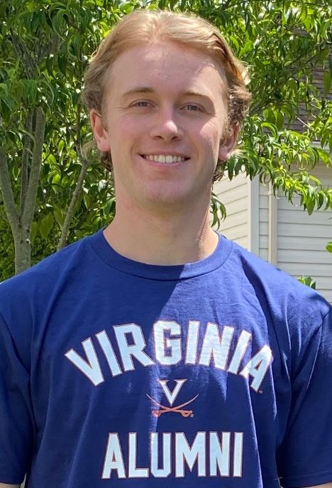

Team Members

Jonathan L. Goodall, Ph.D., P.E.
Professor
email: goodall@virginia.edu
University webpage
Ph.D., Civil Engineering, University of Texas at Austin, 2005, Adviser David R. Maidment
MS, Civil Engineering, University of Texas at Austin, 2003
BS, Civil Engineering, University of Virginia, 2001
Professor Goodall directs the UVA Hydroinformatics Research Group and is a faculty member in the Department of Engineering Systems & Environment with a courtesy appointment in Computer Science. He is also serves as the Associate Director of the UVA Link Lab.

Yawen Shen
Ph.D. Candidate
email: ys5dv@virginia.edu
M.S. Civil Engineering, Georgia Tech
B.S. Civil Engineering, Wuhan University, China
Yaween is studying resilient infrastructure systems. His current work addresses the risk of flooding impacts to transportation infrastructure including bridges and culverts in particular. His current work is using 2D hydrodynamic models to simulate flooding in urban coastal environments.

Ben Bowes
Ph.D. Candidate
email: bdb3m@virginia.edu
M.E. Civil Engineering, University of Virginia
B.S. Environmental Science, Virginia Wesleyan College
Ben is studying urban water infrastructure. His current research is on coastal flooding, real-time flood warning, and smart stormwater management.

Linnea Saby
Ph.D. Candidate
email: ls3en@virginia.edu
M.E. Civil Engineering, University of Virginia
B.A. Environmental Studies, Guilford
Linnea’s research is at the interface of water resources engineering, environmental science, data science, and policy. She is a School of Data Science Fellow and is co-advised with Prof. Larry Band.

Alex Chen
Ph.D. Candidate
email: abc8fq@virginia.edu
M.S. Bioenvironmental Systems Engineering, National Taiwan University, Taiwan
B.S. Hydraulic and Ocean Engineering, National Cheng Kung University, Taiwan
Alex is researching smart stormwater management for coastal communities. He has been investigating the use of crowdsourcing, in particular Personal Weather Stations (PWS), for capturing rainfall during extreme weather events in Norfolk, VA.

Youngdon Choi
Ph.D Candidate
email: yc5ef@virginia.edu
M.S. Civil Engineering, Pusan National University, Republic of Korea
B.S. Civil Engineering, Pusan National University, Republic of Korea
Choi is working on the HydroShare project and is currently building the pySUMMA library for the SUMMA hydrologic model.

Iman Maghami
Ph.D. Candidate
email: im3vp@virginia.edu
M.S. Civil Engineering, University of Tehran, Iran
B.S. Civil Engineering, Sharif University, Iran
Iman is working on using power harvesting and dynamic power management for smart water monitoring in flooding and water quality applications.

Faria Zahura
Ph.D. Candidate
email: fz7xb@virginia.edu
B.S. Civil Engineering, Bangladesh University of Engineering and Technology (BUET)
Faria is applying data science approaches to better understanding transportation disruptions due to flooding. Her work is focused on the Hampton Roads region of Virginia.

Jake Nelson
Ph.D. Student
email: jn8vc@virginia.edu
M.S. CEE, Brigham Young University
B.S. CEE, Brigham Young Univeristy
Jake is part of the Cyber-Physical Systems NRT program and his research is focusing on smart stormwater systems.

Natalie Lerma
Ph.D. Student
email: nrl5fh@virginia.edu
B.S. Ocean Engineering, Texas A&M University - Galveston
Natalie is part of the Cyber-Physical Systems NRT program and her research is focusing on coastal flooding.

Xiafei Yang
M.S. Student
email: xy2wf@virginia.edu
B.S. Electrical Engineering and B.A. Physics, University of Virginia
Xiafei is studying smart stormwater system, incorporated with the idea of Internet of Things (IoT) and cyber-physical systems (CPS), to monitor and control moisture content at bioretention basins through long-distance wireless communication network.

Sean Allen
M.E. Student
email:
B.S., Civil and Environmental Engineering
Sean explored the Things Network as a way to connect smart devices for stormwater monitoring.

Naomi Johnson
B.A. Student - Computer Science
email: snj3k@virginia.edu
Naomi is using image segmentation in order to identify the areal extent and depth of flood waters.
Alumni
Daniel Aycock
Associate, CustomerFirst Renewables
LinkedIn
MBA, Darden School of Business, University of Virginia </a>
Master of Accountancy, University of Tennessee
B.S., Business Administration, University of Tennessee
Daniel worked with the Policy Research team during his time with the VA Clean Energy Project. He served as a lead author on a report reviewing the viability of an array of clean dispatchable generation and long-duration storage technologies to enable Virginia’s future 100% clean electricity system. After graduating from Darden, Daniel now lives in the Washington, DC area, where he is joining CustomerFirst Renewables (CFR), a leading clean energy consulting firm advising organizations seeking to access more renewable power.

Tyler Lohmeyer
Associate Utilities Analyst at the Virginia SCC
LinkedIn
B.A., Economics, University of Virginia
B.A., Global Studies - Environments and Sustainability, University of Virginia
Tyler was an undergraduate research assistant during his time with the VA Clean Energy Project, working with the Policy Research team on regulatory innovation. He now works as an Associate Utilitis Analyst at the Virginia State Corporation Commission (SCC).